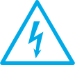

<!DOCTYPE html>
<html lang="ru">
<head>
  <meta charset="UTF-8">
  <meta name="viewport" content="width=device-width, initial-scale=1.0">
  <meta http-equiv="X-UA-Compatible" content="ie=edge">
  <link rel="stylesheet" href="../css/styles.min.css">
  <title>Jõulurõõmu looja</title>
</head>
<body>
  <div id="card">
    <a class="lang" href="../">Eesti keeles</a>
    
    <div class="card-row">
      <div id="pop-up">
        <div class="close"></div>
        <div class="row">
          
          <div class="wrapper">
            <h3>Срубая ель под линиями, руководствуйтесь принципом: безопасность прежде всего</h3>
            <p>Срубая деревья вблизи линий, необходимо соблюдать предельную осторожность.</p>
            <ul>
              <li>Следите, чтобы верхушка выбранного вами дерева была как минимум на 3 метра ниже линий электропередач.  В противном случае через мокрое дерево вы можете получить удар током.</li>
              <li>Передвигаясь вблизи линий, будьте внимательны, чтобы провода с линий не были сорваны во время шторма. Если Вы заметите упавшие на линию деревья, не подходите к ним, поскольку под напряжением может быть даже поверхность земли. Об опасной ситуации сообщите по телефону <strong>112 или 1343</strong>.</li>
              <li>При сильном ветре держаться подальше от линий электропередач</li>
              <li>Если вы оказались вблизи оборванного провода электролинии, выйдите из опасной зоны (не отрывая ноги друг от друга, очень короткими и осторожными прыжками, чтобы сохранить равновесие) на расстояние не менее 8 метров. Грунт тоже проводит электричество и может быть под напряжением.</li>
            </ul>
          </div>
        </div>
      </div>
      <section class="content">
        <h1>НОВОГОДНЯЯ РАДОСТЬ</h1>
        <p>Приносить ёлку из леса стало нашей любимой традицией. Чтобы сберечь природу, мы советуем выбирать ёлочку под линиями электропередач – так мы дадим деревцу, которому не суждено стать высокой елью, возможность подарить радость на праздники.</p>
        <p>При поиске елки вам поможет приложение "RMK Loodusega koos“ или веб-страница <a href="https://www.rmk.ee/jolka" target="_blank">www.rmk.ee/jolka</a>.</p>
        <p>В приложении вы найдете расположение лесов RMK, рекомендации о том, где и какую ёлку можно взять, а также советы по соблюдению безопасности, которые необходимо учитывать, срубая ёлку под линиями электропередач.</p>
        <p>В приложении можно также удобно оплатить за ёлку.</p>
        <div class="apps">
          <a class="google" href="https://play.google.com/store/apps/details?id=ee.rmk.app" target="_blank"></a>
          <a class="apple" href="https://apps.apple.com/gb/app/rmk-loodusega-koos/id1465721443" target="_blank"></a>
        </div>
        <h2>Светлых и радостных праздников вам желает Elektrilevi!</h2>
        <div id="logod">
          
          
        </div>
      </section>
      <aside id="sidebar">
        <a class="kuusk" href="https://www.rmk.ee/jolka" target="_blank">
          
          <p>Следите за тем, чтобы ёлка была именно из <b>государственного леса!</b></p>
        </a>
        <div class="danger">
          
          <p><b>Не забывайте о соблюдении безопасности</b> в близи линий электропередач! >></p>
        </div>
      </aside>
    </div>
  </div>
<script src="../js/script.min.js" charset="utf-8"></script>
</body>
</html>
